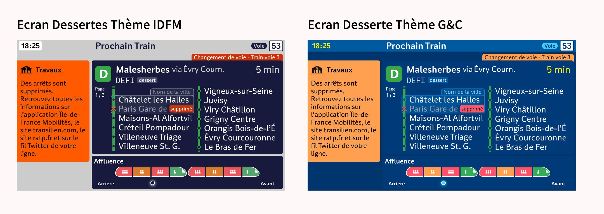

14
Live MaasTransit · Thèmes
Résorber la dette graphique et thématiser par région
La dette graphique de l'écran Live MaasTransit a été résorbée. Grâce aux tokens, chaque région qui souhaite utiliser cet écran dispose de son propre thème, ici IDFM et Gares & Connexions.
